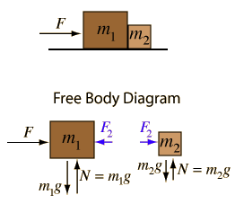
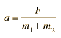
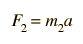
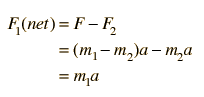

Force on Two Masses

Since F is the only net force acting on the two masses, it determines the acceleration of both:

The force F
2
acting on the smaller mass may now be determined.

Note that by
Newton's third law
, the force F
2
acts backward on m
1
. Note that the net force acting on m
1
is consistent with the above.

Calculation
Index
Newton's laws
Standard mechanics problems
HyperPhysics
*****
Mechanics
R Nave
Go Back
Force on Two Masses
Add friction
Application of
Newton's second law
to two masses.
For a force F=
N applied to two masses m
1
=
kg and m
2
=
kg which are in contact with each other, the acceleration is given by
=
m/s²
Then the force exerted on mass m
2
can be determined.
=
N
Expressions
Index
Newton's laws
Standard mechanics problems
HyperPhysics
*****
Mechanics
R Nave
Go Back